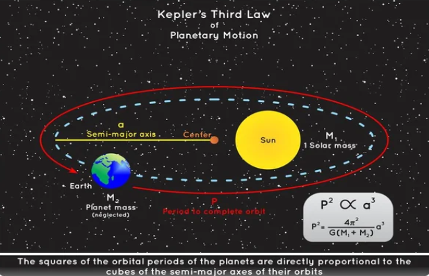

Back to Main Application
Learn Astronomical Terms
Orbital Eccentricity
Orbital eccentricity measures how much an orbit deviates from being a perfect circle. It's a key concept that helps describe the shape of an orbit, whether it's around the Sun, a planet, or another celestial body.
- Circular Orbit: When the eccentricity is 0, the orbit is a perfect circle. The object stays the same distance from the body it's orbiting.
- Elliptic Orbit: When the eccentricity is between 0 and 1 (0 < e > 1), the orbit is an ellipse (oval-shaped). Most planets in our solar system, including Earth, have elliptical orbits, meaning they are slightly stretched out.
- Parabolic Trajectory: When the eccentricity is exactly 1, the object follows a parabolic path, which means it will escape the gravity of the central object but never return. This type of orbit is rare in nature.
- Hyperbolic Trajectory: When the eccentricity is greater than 1 (e > 1), the object follows a hyperbolic path and will also escape the gravity of the object it's orbiting, but this orbit is even more extreme than the parabolic one.
Orbital Inclination
Orbital inclination is the angle between the orbit of an object (like a planet or a satellite) and a reference plane. It helps describe how tilted an orbit is relative to that plane, which is important for understanding the movement and position of objects in space.
- Zero Inclination: When the inclination is 0°, the object's orbit lies exactly on the reference plane, meaning there is no tilt.
- Low Inclination: A small inclination (close to 0°) means the orbit is only slightly tilted.
- High Inclusion: A large inclination (closer to 90°) means the orbit is highly tilted, almost perpendicular to the reference plane.
- Retrograde Orbit: When the inclination is greater than 90°, the object orbits in the opposite direction to the rotation of the central body (like a planet or the Sun).
Argument of Perihelion
The Argument of Perihelion is an angle that defines the orientation of an orbit's closest approach to the central object (like the Sun) within its orbital plane. This helps describe the shape and alignment of elliptical orbits.
In simpler terms, the argument of perihelion tells us where the point of perihelion (the closest point to the Sun) is located along an orbit, relative to another reference point in the orbital plane. It's measured from the ascending node, which is the point where the object passes from below to above the reference plane (like the ecliptic for orbits around the Sun).
- Perihelion refers to the point where an object in orbit, such as a planet or asteroid, is closest to the Sun.
- Argument of Perihelion (ω) is the angle, measured in the orbital plane, between the ascending node and the perihelion.
Longitude of the Ascending Node
The Longitude of the Ascending Node is an important angle that helps define the orientation of an orbit in three-dimensional space. It tells us where the orbit crosses a reference plane, such as the ecliptic plane (the plane in which Earth orbits the Sun), as the object moves upward (from south to north).
- Ascending Node: The point where the object moves from below to above the reference plane.
- Longitude of the Ascending Node (Ω): The angle between the reference direction (usually the vernal equinox) and the ascending node, measured in the reference plane.
Semi-Major Axis

Semi-major axis is a key measurement that defines the size of an orbit, particularly in elliptical shapes. It's half of the longest diameter of an ellipse, which means it stretches from the center of the ellipse to the furthest point along its perimeter.
- Circular orbits: In the special case of a circular orbit, the semi-major axis is simply the radius of the circle, since the orbit has a constant distance.
- Elliptical orbits: For elliptical orbits, the semi-major axis is half of the longest dimension of the ellipse and is used to describe the average distance of the orbiting body from the center of the ellipse (the primary body, like the Sun).
- Relation to orbital period: The semi-major axis also relates to the time it takes for an object to complete one orbit. According to Kepler's Third Law, the larger the semi-major axis, the longer the orbital period.
Perihelion and Aphelion
Perihelion: The perihelion is the point in an object's orbit where it is closest to the Sun. Since most orbits, like that of Earth and other planets, are elliptical rather than perfectly circular, there will be a moment in the orbit when the object is nearer to the Sun than at any other time.
Aphelion: The aphelion is the point in an object's orbit where it is farthest from the Sun. In an elliptical orbit, the object will have both a closest point (perihelion) and a farthest point, which is known as aphelion.
Near-Earth Object (NEO)
A Near-Earth Object (NEO) refers to an asteroid or comet whose orbit brings it into close proximity to Earth. Specifically, NEOs are classified as those that come within 1.3 astronomical units (AU) of the Sun, which is roughly equivalent to 121 million kilometers (75 million miles).
NEOs are further divided into two main categories:
- Near-Earth Asteroids (NEAs): These are asteroids with orbits that approach Earth. They can be further categorized based on their specific orbits:
- Aten: NEAs that primarily orbit inside Earth's orbit while crossing its path.
- Atira: NEAs that orbit entirely within Earth's orbit.
- Apollo: NEAs that cross Earth's orbit.
- Amor: NEAs that approach but do not cross Earth's orbit.
- Near-Earth Comets (NECs): These are comets that come close to Earth but are less commonly tracked compared to asteroids.
Potentially Hazardous Asteroid (PHA)
A Potentially Hazardous Asteroid (PHA) is a type of Near-Earth Asteroid (NEA) that poses a higher risk of impact with Earth. PHAs are specifically identified based on two key criteria:
- They come within 0.05 astronomical units (AU) of Earth's orbit, which is about 7.5 million kilometers (4.6 million miles).
- They are large enough, typically 140 meters (460 feet) or more in diameter, to cause significant damage in the event of a collision.
Types of Comets
- Halley-type comets: Comets with long orbital periods (20 to 200 years) that originate from the outer solar system.
- Encke-type comets: Comets with very short orbital periods (less than 20 years) that usually originate from the inner solar system.
- Jupiter-family comets: Comets with orbital periods of less than 20 years, strongly influenced by Jupiter's gravity.
Binary Asteroid (Code B)
A binary asteroid is a system of two asteroids that orbit around a common center of gravity.
Space Agencies and Research Projects
- Lincoln Near-Earth Asteroid Research (LINEAR): An asteroid and comet discovery program launched in 1998 by the U.S. Air Force and NASA. It uses advanced automated telescopes and technology originally designed for tracking satellites.
- Lowell Observatory Near-Earth Object Search (LONEOS): An asteroid discovery program operated by Lowell Observatory from 1993 to 2008. It used an automated telescope system to scan the sky and identify potentially hazardous asteroids and comets.
- Japan Aerospace Exploration Agency (JAXA): Japan's national space agency, founded in 2003. It's known for innovative missions like the Hayabusa and Hayabusa2 asteroid missions, which successfully returned samples from asteroids.